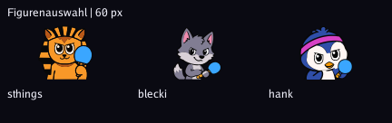
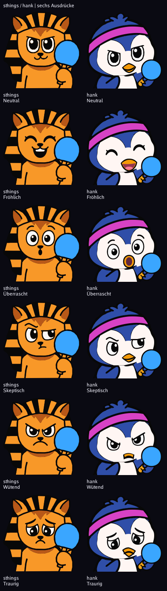
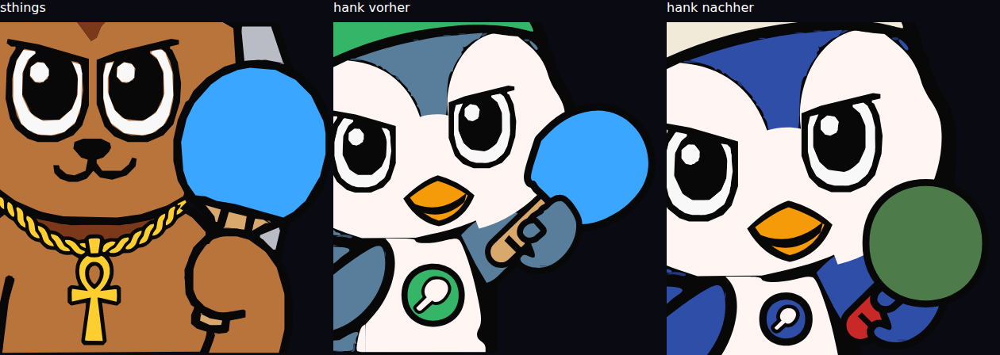
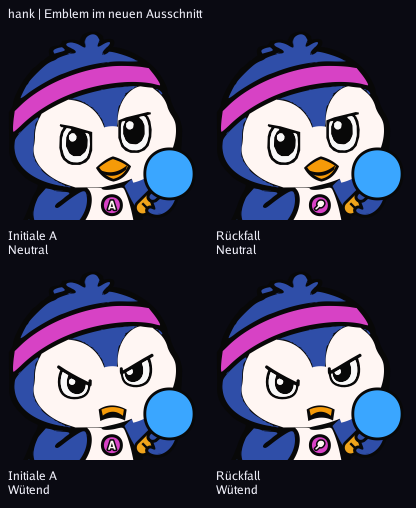
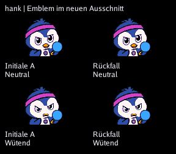

Historischer 120-%-Ausschnitt. Aktuell: 110 %, sichtbare Hand und sthings-Schläger.
120 % gleichmäßig, Schopf um 40 % gekürzt. Kopfbreite ist priorisiert; die tiefere Augenlinie ist der freigegebene Kompromiss. Wütend hat einen schmaleren, geschlossenen Schnabel.
| Figur | Kopfbreite | Augenlinie | Oberer Rand |
|---|---|---|---|
| sthings | 91,2 % | 43,2 % | 2 px |
| hank vorher | 75,2 % | 53,7 % | 11 px |
| hank jetzt | 90,2 % | 57,6 % | 8 px |
| blecki unverändert | 70,5 % | 48,0 % | 15 px |

Echte Figurenauswahl im Browser

Gleicher Ausschnitt, je 420 px: sthings, hank vorher, hank nachher. Der Schläger ist jetzt die letzte gezeichnete Gruppe. Zufällige Farben stammen unverändert aus dem HTTP-Endpunkt.

48 × 48 Einheiten, mindestens 8 zum unteren Rand und 12 zu Arm und Ausrüstung.


192 Navy · 192 Schwarz · 64 Navy · 64 Schwarz · 28 Navy · 28 Schwarz
Unterscheidbarkeit 64 px: 213, schwächstes Paar Skeptisch/Wütend. Echte LED-Abnahme offen.